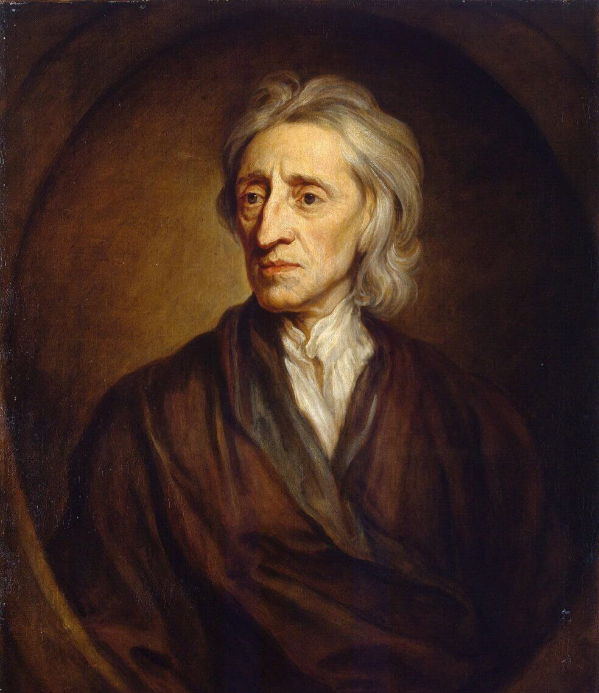
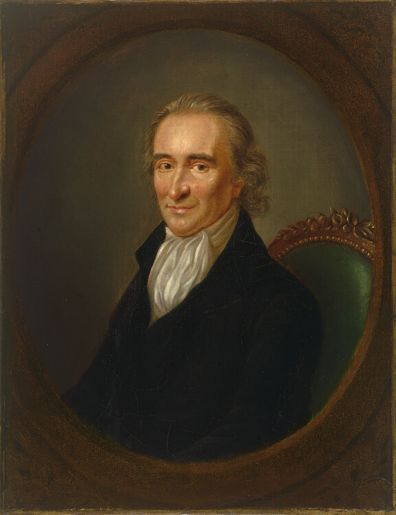

<div class="h-100 bg-blue d-flex justify-content-center">
    <div class="all-width screen-size container-for-scroll bg-blue">
        <div class="mx-auto position-relative w-100 min-height p-0 d-flex culper-ring">
            <div class="position-relative d-flex flex-column justify-content-between culper-ring">
                <div class="page-14">
                    <div class="d-flex align-items-center user mt-3">
                        <h2 class="culper-ring__texts__title m-0 bg-black tree-title">
                            <span class="blue-after-line d-inline-block position-relative">Tree</span>
                            <span class="blue-after-line d-inline-block position-relative">of</span>
                            <span class="border-bottom-line d-inline-block position-relative">Liberty</span>
                        </h2>
                        <button id="page_15_audio_play" type="button"
                                class="border-0 bg-transparent user__img overflow-hidden flex-shrink-0"
                                data-toggle="tooltip" data-placement="bottom"
                                title="Click the professor to hear his commentary on the period">
                            
                        </button>
                        <audio muted>
                            <source src="../assets/img/audio-video/Page 16 audio.mp3" type="audio/mpeg">
                        </audio>
                    </div>
                    <p>
                        One of the United States' founding fathers Thomas Jefferson evocatively claimed that
                        the
                        Tree of Liberty had to be regularly nourished with the blood of patriots and
                        tyrants.
                        Not
                        only does his quote highlight the aggressive lengths to which the American
                        revolutionaries were willing to go in their pursuit of independence, but it also
                        introduces
                        one of the key ideals of the age: Liberty.
                    </p>
                    <p class="culper-ring__texts__subDesc text-decoration-none">
                        Explore the Tree of Liberty below to find out more about the important ideals that
                        influenced this period.
                    </p>
                </div>
                <div class="position-relative">
                    <div class="d-flex justify-content-end">
                        <div class="text-right w-100 pr-0 info position-relative">
                            <h3 class="m-0">John Locke</h3>
                            <p class="m-0 text-decoration-underline text-right">(1632-1704)</p>
                            <p class="m-0 text-uppercase camilcase camelcase-text">
                                <span class="first-letter">T</span>he
                                <span class="first-letter">F</span>ather
                                of <span class="first-letter">L</span>iberalism</p>
                        </div>
                        <div class="line d-flex align-items-center col-6 col-sm-8 p-0 ml-auto mb-0">
                            <div class="dropdown show">
                                <a
                                        class="rounded-circle tree-of-liberty__btn text-white border-0 d-flex align-items-center justify-content-center bg-white dropdown-toggle"
                                        href="#"
                                        role="button"
                                        id="dropdownJohnLocke "
                                        data-toggle="dropdown"
                                        aria-haspopup="true"
                                        aria-expanded="false">
                                </a>

                                <div
                                        class="dropdown-menu author"
                                        aria-labelledby="dropdownJohnLocke">
                                    <button class="btn bg-transparent border-0 shadow-none position-absolute close-sticky-modal p-0"
                                            type="button">
                                        <svg width="25" height="25" viewBox="0 0 60 60" fill="none" xmlns="http://www.w3.org/2000/svg">
                                            <path d="M33.3147 30.0001L59.3135 4.00115C60.2288 3.0858 60.2288 1.60174 59.3135 0.686512C58.3981 -0.22872 56.9141 -0.228837 55.9988 0.686512L29.9999 26.6854L4.00115 0.686512C3.0858 -0.228837 1.60174 -0.228837 0.686512 0.686512C-0.22872 1.60186 -0.228837 3.08592 0.686512 4.00115L26.6853 29.9999L0.686512 55.9988C-0.228837 56.9142 -0.228837 58.3983 0.686512 59.3135C1.14413 59.7711 1.74401 59.9998 2.34389 59.9998C2.94377 59.9998 3.54353 59.7711 4.00127 59.3135L29.9999 33.3147L55.9987 59.3135C56.4563 59.7711 57.0562 59.9998 57.6561 59.9998C58.256 59.9998 58.8558 59.7711 59.3135 59.3135C60.2288 58.3981 60.2288 56.9141 59.3135 55.9988L33.3147 30.0001Z" fill="#282828"/>
                                        </svg>
                                    </button>
                                    <div class="w-100 h-100 popup-container">
                                        
                                        <div class="d-flex flex-wrap align-items-end mb-2">
                                            <h4 class="popup-title-font pl-2 mb-0 mr-1">John Locke</h4>
                                            <p class="m-0 text-decoration-underline">(1632-1704)</p>
                                        </div>
                                        <ul class="list-unstyled bio">
                                            <li class="d-flex align-items-start">
                                                17th century English Philosopher.
                                            </li>
                                            <li class="d-flex align-items-start">
                                                A more optimistic approach to the human condition than
                                                Thomas
                                                Hobbes
                                            </li>
                                            <li class="d-flex align-items-start">
                                                Wrote Second Treatise of Government (1680) – argued that a ruler
                                                gains
                                                authority through the consent of the governed, and the
                                                government
                                                then
                                                has
                                                a duty to uphold the natural rights of the people
                                            </li>
                                            <li class="d-flex align-items-start">
                                                The natural rights were: Life, Liberty, and Property.
                                            </li>
                                            <li class="d-flex align-items-start">
                                                Failure to uphold these rights would allow the people to
                                                overthrow
                                                the
                                                government.
                                            </li>
                                            <li class="d-flex align-items-start">
                                                Influenced Thomas Jefferson as he was drafting the Declaration
                                                of
                                                Independence.
                                            </li>
                                        </ul>
                                    </div>
                                </div>
                            </div>
                        </div>
                    </div>

                    <div class="d-flex mt-1 justify-content-end">
                        <div class="d-flex align-items-end flex-column justify-content-center w-100 pr-0 info position-relative">
                            <h3 class="m-0">Thomas Paine</h3>
                            <p class="m-0 text-decoration-underline">(1737-1809)</p>
                            <p class="m-0 text-uppercase text-right camelcase-text">
                                <span class="first-letter">T</span>he man who brought <span
                                    class="first-letter">C</span>ommon <span class="first-letter">S</span>ense
                                to the people</p>
                        </div>
                        <div class="line d-flex align-items-center col-3 p-0">
                            <div class="dropdown show">
                                <a
                                        class="rounded-circle tree-of-liberty__btn text-white border-0 d-flex align-items-center justify-content-center bg-white dropdown-toggle"
                                        href="#"
                                        role="button"
                                        id="dropdownThomasPaine"
                                        data-toggle="dropdown"
                                        aria-haspopup="true"
                                        aria-expanded="false">
                                </a>
                                <div
                                        class="dropdown-menu author"
                                        aria-labelledby="dropdownThomasPaine">
                                    <button class="btn bg-transparent border-0 shadow-none position-absolute close-sticky-modal p-0"
                                            type="button">
                                        <svg width="25" height="25" viewBox="0 0 60 60" fill="none" xmlns="http://www.w3.org/2000/svg">
                                            <path d="M33.3147 30.0001L59.3135 4.00115C60.2288 3.0858 60.2288 1.60174 59.3135 0.686512C58.3981 -0.22872 56.9141 -0.228837 55.9988 0.686512L29.9999 26.6854L4.00115 0.686512C3.0858 -0.228837 1.60174 -0.228837 0.686512 0.686512C-0.22872 1.60186 -0.228837 3.08592 0.686512 4.00115L26.6853 29.9999L0.686512 55.9988C-0.228837 56.9142 -0.228837 58.3983 0.686512 59.3135C1.14413 59.7711 1.74401 59.9998 2.34389 59.9998C2.94377 59.9998 3.54353 59.7711 4.00127 59.3135L29.9999 33.3147L55.9987 59.3135C56.4563 59.7711 57.0562 59.9998 57.6561 59.9998C58.256 59.9998 58.8558 59.7711 59.3135 59.3135C60.2288 58.3981 60.2288 56.9141 59.3135 55.9988L33.3147 30.0001Z" fill="#282828"/>
                                        </svg>
                                    </button>
                                    <div class="w-100 h-100 popup-container">
                                        
                                        <div class="d-flex flex-wrap align-items-end mb-2">
                                            <h4 class="popup-title-font pl-2 mb-0 mr-1">Thomas Paine</h4>
                                            <p class="m-0 text-decoration-underline">(1737-1809)</p>
                                        </div>
                                        <ul class="list-unstyled bio">
                                            <li class="d-flex align-items-start">
                                                Emigrated to America in 1774. Philosopher.
                                            </li>
                                            <li class="d-flex align-items-start">A 1776, Common Sense.
                                            </li>
                                            <li class="d-flex align-items-start">
                                                Advocated a complete break with England for the colonies –
                                                he
                                                directly associated the corrupt monarchy with the hated taxation
                                                policies.
                                            </li>
                                            <li class="d-flex align-items-start">
                                                The natural rights were: Life, Liberty, and Property.
                                            </li>
                                            <li class="d-flex align-items-start">
                                                The power of Paine’s work was that he translated the
                                                educated
                                                philosophies of other thinkers – such as Locke – into words that
                                                the
                                                masses could
                                                understand.
                                            </li>
                                        </ul>
                                    </div>
                                </div>
                            </div>
                        </div>
                    </div>
                    
                </div>
                <div class="page-number position-absolute text-center w-100 b-0">15</div>
            </div>
        </div>
    </div>
</div>